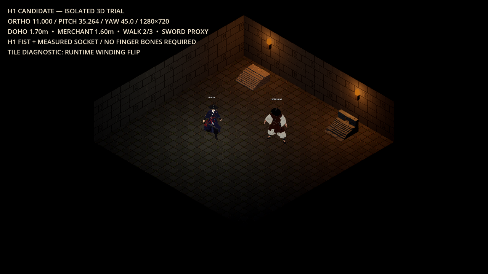
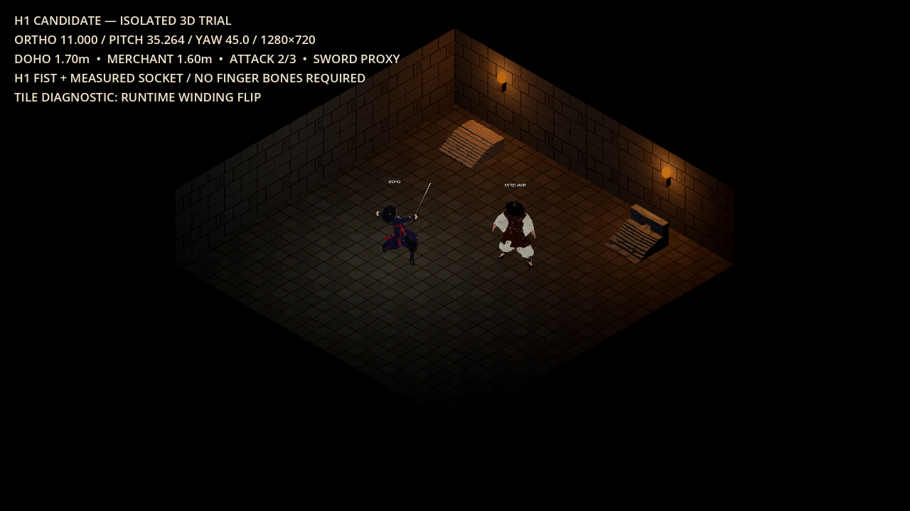
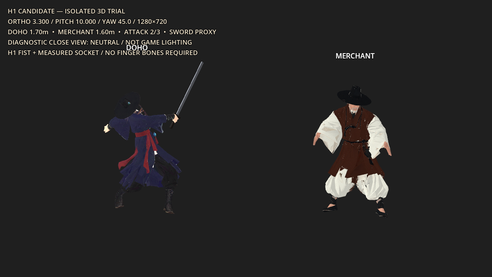
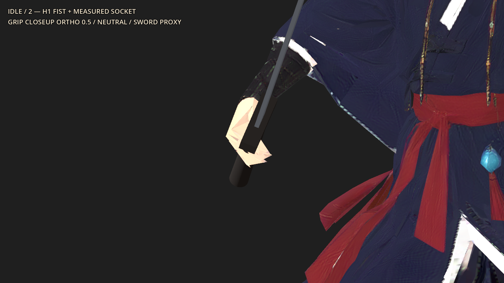
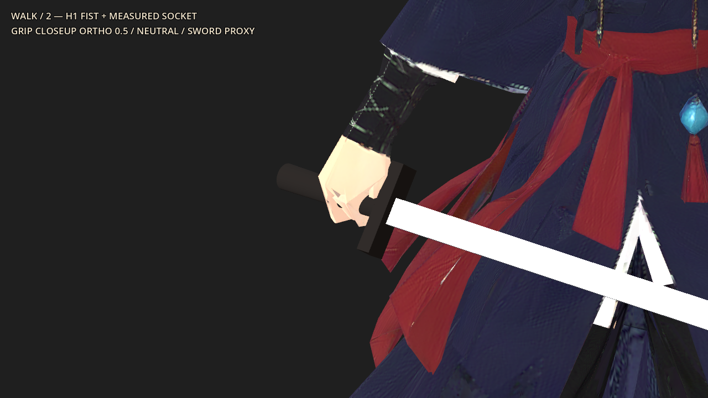
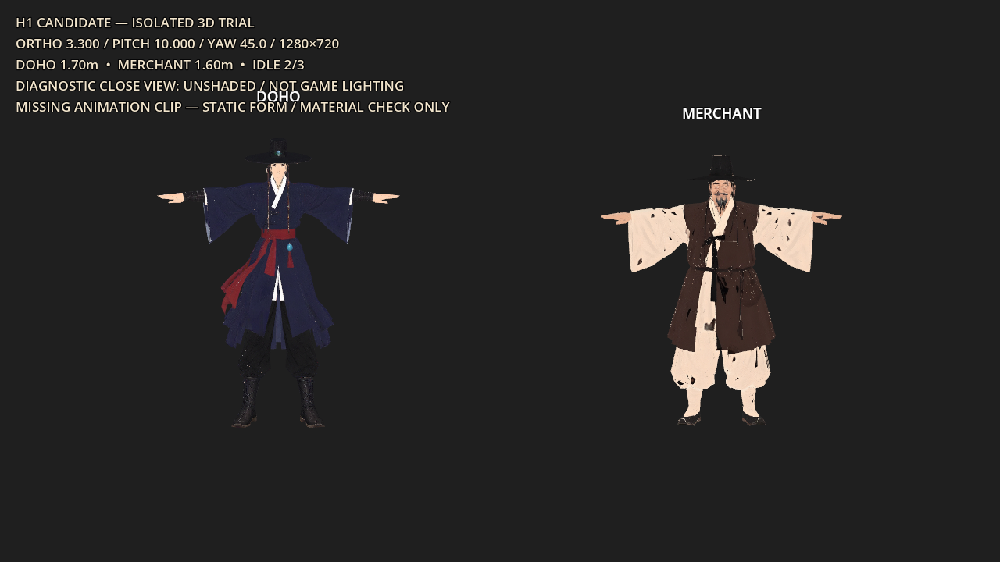
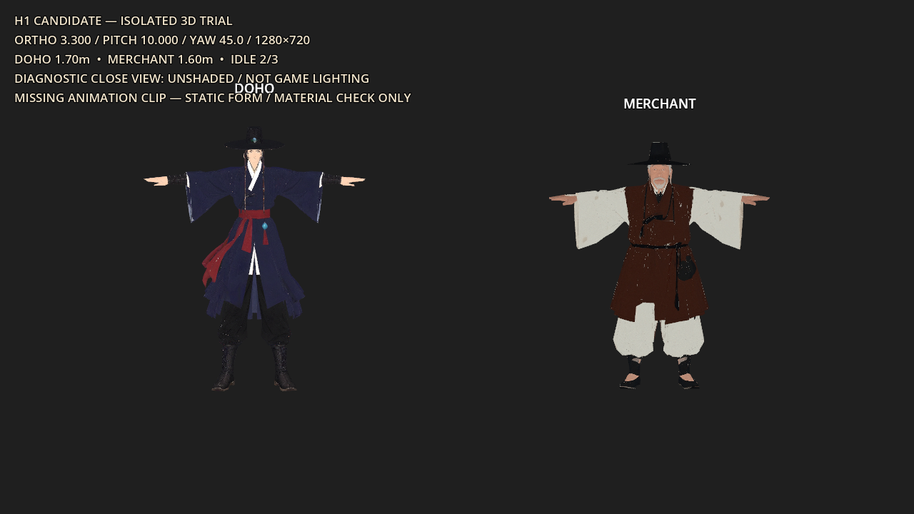

H1 실제 후보메인 게임 반입 없음80 credits · 2543 잔액
H1 도호 + 김 영감 · 3D 시험
실제 생성 → 24본 리깅 → 기존 게임 3클립 리타겟 → Godot 실측을 완료했다. 기술 재생은 통과했으며, 캐릭터 최종 시각 승인은 별도다.
남은 결함 — 손끝 조형의 거침, 동작 중 옷자락 겹침. 주먹 교정·실측 소켓·3클립/재질 보존은 통과했다. 상인은 재텍스처로 큰 검은 파편을 없앴으나 얼굴·신발의 재해석과 전투형 idle은 승인 대상이다. 아래 밝은 근접판은 진단용이며 게임광 합격을 뜻하지 않는다.
계약 예산 미달 — 정본 NPC≤8k·텍스처≤1K에 비해 상인10,620tri·양쪽2K다. 상인1.6m는 이번 시험 지시값이며 현재 게임1.5m와 다르다. model_check PASS는 기술 검사이며 예산·정체성·그립의 시각 합격을 뜻하지 않는다.
실제 게임 카메라와 기본광
1280×720 · ortho11 · pitch35.264 · yaw45. 현재 환경/반경광/횃불. floor/wall의 기존 winding 문제는 런타임 사본에서만 교정했고 HUD에 표시했다.
 최종 시험 기본판. Meshy 리그의 emission1 재질을 유지했으며 현재 게임 모델도 동일 조건이다.
최종 시험 기본판. Meshy 리그의 emission1 재질을 유지했으며 현재 게임 모델도 동일 조건이다.
이동·공격 캡처 보기

walk · 45% 시점
attack · 45% 시점중립 근접 · 손과 의복 연결
 도호 남색 겹도포·흑립·흰 동정·붉은 띠·푸른 패 유지. 24본 리그의 손 정점 교정 완료. 손가락 본 추가 없이 파지 형태를 만들었다.
도호 남색 겹도포·흑립·흰 동정·붉은 띠·푸른 패 유지. 24본 리그의 손 정점 교정 완료. 손가락 본 추가 없이 파지 형태를 만들었다.
검은 별도 BoneAttachment 프록시. H1 손아귀 좌표로 소켓을 교정했다. 손끝 모양과 옷 겹침의 최종 시각 승인은 보류.주먹 교정과 손아귀 소켓
기존 rig_fix --fist로 손 위치180개를 교정하고 원래 GLB에 반영했다. 손 주변 normal262개·seam12정점만 추가 처리했으며 10,827tri·24본·3클립 길이와 원래 이미지/재질/스킨을 보존했다. 소켓 왕복 오차는 원점0.0000m·칼끝0.00°다. 손잡이 접촉과 검 방향은 개선됐으며 확대 시 손끝의 거친 모서리와 walk 후반 옷 가림은 남아 있다.

idle · 손이 손잡이를 감싸는 위치로 연결. 정식 H1 소켓 사용.
walk · 손아귀 위치를 유지. 옷과 무기 전체 접촉은 최종 시각 승인 대상. attack · 검 방향과 손잡이 접촉 개선. ortho0.5 중립 진단 확대.
attack · 검 방향과 손잡이 접촉 개선. ortho0.5 중립 진단 확대.실측 손아귀 JSON · 검 소켓 값 · 손 교정 / 원본 클립·재질 보존 증명
상인 파편 원인과 보정
조명을 제거한 표시에서도 검은 얼룩이 남았다. 텍스처를 제거하면 사라지므로 광량이나 winding 문제가 아닌 albedo/UV 투영 결함으로 분리했다. retexture는 위치·인덱스·UV를 그대로 유지했다.

전 · 원형 unshaded. 밝은 소매/바지에 검은 파편이 남는다.
후 · 텍스트 기반 retexture 1회, 10 credits. 큰 얼룩은 제거, 얼굴/신발 해석은 재확인 필요.도호만 바꾼 비교 후보
동일 게임 카메라 캡처에서 도호 영역만 CSS로 200% 확대했다. 전체 원본은 각 링크에서 확인할 수 있다. 이 비교의 NPC는 retexture 전 상태다.
기본 · 현재 게임과 같은 emission1 / metallic1PC만 metallic0 / roughness0.8 · emission 유지PC 무광 + PC 레이어에만 국소광0.65. 바닥/NPC 광량 변경 없음
기록과 재현
시험 기록 · 요청/비용 ledger · 수치 검수 · 최종 렌더 보고서 · 상인 원형/스킨/클립 보존 증명
raw·rigged·retarget·retexture·pre_fist를 분리 보존했다. 공유 응답의 임시 다운로드 서명은 제거했고 원 실행 응답은 git에서 제외된 로컬 tmp에만 보관했다. 서명 제거 기록 · 패키지 검증. renderer/는 별도 Godot 프로젝트이며 주 프로젝트·실행 중 에디터·Blender를 변경하지 않는다.